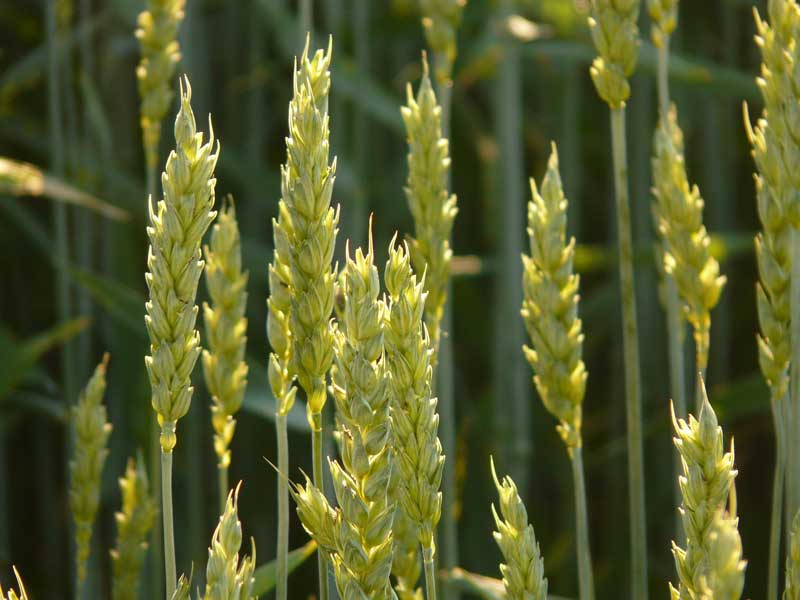
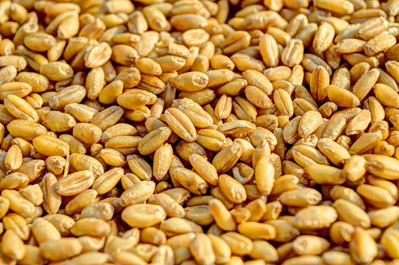

Rice and wheat are the major cereal crops of India. While rice is the staple food in southern part of the country, wheat is the staple food for Indians in the Northern and Western parts of India.
Information about Wheat Crop

Under the botanical classification wheat crop belongs to genus Triticum. There are many species of this particular genus that is used for cultivation such as Triticum sativum, Triticum polonicum, Triticum monococcum, etc. However, Triticum sativum is the most cultivated wheat variety. The different cultivated varieties of wheat species are distinguished from each other by the number of flowers that are produced.
Wheat plants have their leaves growing in a telescopic fashion at the apex of the stem. The last leaf that develops is called flag leaf and it is very important since the photosynthetic rate of this leaf is higher than other leaves. It supplies carbohydrates to the developing ear.
Ideal Conditions for Wheat Cultivation in India
Climate for Wheat Farming in India
Wheat is a widely adaptable crop that can be grown in climates ranging from temperate to tropical and cold northern parts. In addition it can be cultivated anywhere from land on sea level to an altitude of up to 3300 meters. Places with a cool, moist weather for most part of the year followed by a short, dry and warm spell is most suited for wheat cultivation. This type of weather condition permits appropriate maturing and ripening of grains. However, areas with heavy rainfall, moist and warm climate are not suited for commercial wheat farming.
Similarly, drought-like conditions, extremely low or high temperatures during the flowering stage would affect the wheat crop. During high temperature, a lot of energy is lost owing to transpiration. Hence, there is very little residual energy left within the crop resulting in low yields. High humidity and low temperature is likely to induce rust attack on the crops.
Season for Wheat Cultivation in India
Wheat, in India, is best grown as a rabi or winter season crop since the conditions during that time are conducive for growth and ensures maximum yield. Since wheat is capable of tolerating severe cold it resumes growth in summer after being dormant in winter.
Soil for Wheat Cultivation
Wheat needs soil with a moderate amount of water holding capacity. Being very sensitive to water logging, heavy soils with poor drainage capacity is not preferred for wheat cultivation. Generally, black cotton soil with good drainage capacity and a neutral pH is preferred for cultivation. If wheat is grown as a dry crop heavy soil with a good drainage capacity is preferred. On the contrary, soil with moderate drainage capacity is preferred for wheat as irrigated crop. The soil used for wheat cultivation must be free from coarse sand, gravel, stones, have a uniform texture and should be deep. It must be soft enough to permit deeper root penetration.
Water Requirement
Wheat requires 450-650mm of water. Maximum amount of watering is needed during the flowering and heading stage while ripening requires very little water. If cultivated as an irrigated crop, flood irrigation is done once in every 10 days. However, if cultivation is done on black soil, then the irrigation is done once in every 15 days since the soil has a higher amount of water holding capacity.
Crop Rotation
Since wheat takes 100 days to mature two crops can be cultivated on the same field. Wheat is generally sown as a rabi crop- in the month of October. It is very rarely raised as a kharif or main season crop. Hence, crops like cow-peas, Bengal gram, other pulses, onion, ginger, coriander and groundnut (early season variety) are raised as main crop followed by wheat as a late season crop in the same year. In areas of low rainfall and in the North-East, wheat is the only crop cultivated for the year. The next year, farmers cultivate pulses and coriander. In the third year, they cultivate bajra, followed by other non-cereal crops like grains. The fifth year sees wheat cultivation. In case of black cotton soil, farmers cultivate cotton for a year, followed by wheat the next year.
Planting Material
Wheat was an imported cereal during the Independent Era. However, during 1960’s owing to Green Revolution, newer varieties of wheat strains or wheat seeds were introduced that were drought and rust resistant, could withstand higher amount of water logging etc. Till the Green Revolution, wheat that was cultivated in India had very poor resistance and consequently very low yield. The newer more resistant strains that were introduced promised higher yield. Sujata, Jawahar, MACS series, Indra, DDK series, etc. are some of the varieties that were made during and after the Green Revolution period. These varieties are much more resistant to pests and diseases, have better adaptability and can withstand weather changes.
Land Preparation
One of the primary requirements of wheat cultivation is that the soil must be free of clods, stones, sand and gravel. Hence, the land must be ploughed at least 3 times during summer before cultivation. The residual crop debris can be burnt in the field itself. Following this the land must be harrowed again during the rainy season to prevent growth of wild plants and weeds. After this heavy harrowing, a light harrowing is done wherein the rots and stubble are removed. This step is conducted immediately before sowing.
However, in case of irrigated crop, the land is not ploughed as many times. Irrigation is done before sowing so that there is adequate amount of moisture when sowing is done. In cases where there are problems of white ants and pests, 10% BHC or 5% Aldrin is dusted on the soil at the rate of 12 Kg per acre. This is done generally before the last round of ploughing.
In irrigated form of cultivation, the land is manured well and then re-ploughed.
Sowing
Before sowing, the seeds are treated with 5 gram Trichoderma spores or 5 Kg carbendazim for every 1 Kg seed. Wheat seeds are also given solar treatment so as to avoid diseases like wheat smut on the crop. There should be a space of 15- 20 cm maintained between the seeds. In case of late sowing the seeds must be soaked overnight in water. Shallow sowing must be done and it should be covered with a thin layer of farm yard manure.
Irrigation
Flood irrigation is the most common type of irrigation followed. Although irrigation is needed only once in every 10 days, it is done only once in every 15 days in case black soil is used for cultivation. On an average about 6-7 irrigation cycles are needed for wheat since they are ready for harvest within 120 days. In other words, irrigation is provided at the most crucial stages like:
- Crown root initiation
- Leaf growth development (tillering)
- Jointing Stage which is the most critical stage as it provides evidence that plants have initiated the reproductive phase.
- Flowering stage
- Ripening stage
- Maturity stage
Diseases and Plant Protection in Wheat Cultivation
Major diseases affecting wheat crop are powdery mildew, smut, stem rust, foliar blights, bunts and molya. They can be taken care of by:
- Following a timely sowing cycle
- Solar treatment of seeds before sowing
- Using resistant varieties
- Uprooting the affected plant and burning it
Sulphur, Vivatax, Zinc, Manganese, Agrasen are the chemicals used for treatment.
Harvesting and Curing Wheat

When the kernels of wheat plant become hard and the plant turns straw-colored, it is time for harvesting the crop. Harvesting is usually done manually with a sickle although for vast areas, machines maybe used. The crop is then threshed using thresher or treading with cattle.
Storage of Wheat Crop
Once threshing is done, the grains must be dried thoroughly so as to remove all the moisture content. The godown wherein the grains are stored must be fumigated properly. It must be ensured that the storage places are completely moisture free.
Wheat Production in India
Worldwide, wheat is one of the most widely consumed cereal crops followed by rice. Globally, India stands 2nd in wheat production with China in the lead. Uttar Pradesh is the largest wheat producer in India. Punjab, Haryana and Madhya Pradesh closely follow in wheat cultivation in India. During the time of India’s independence, wheat productivity was very low- 663 Kg per hectare in 1950-51. This was definitely insufficient for feeding the Indian population. Hence India used to import wheat mostly from the US. However, in 1961, the Government of India appointed a Commission that assessed the cause behind the low productivity of wheat. The reasons found were:
- Following a timely sowing cycle
- Solar treatment of seeds before sowing
- Using resistant varieties
- Uprooting the affected plant and burning it
Thanks to the Green Revolution that took place in the 1960s, the scenario changed completely and without much delay, India became self-sufficient in wheat production.
References:
http://agropedia.iitk.ac.in/content/water-requirement-different-crops
http://agropedia.iitk.ac.in/content/wheat-varieties-different-location-india
http://www.iasri.res.in/wheat/default.asp